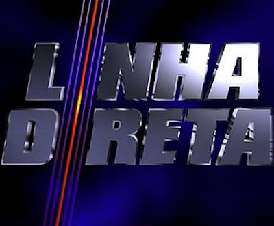

Linha Direta - História
Linha Direta foi um programa transmitido pela TV Globo, exibido entre 1999 e 2007 nas noites de quinta-feira. O programa tinha o objetivo de mostrar os crimes que ocorreram no Brasil, cujos os autores estariam foragidos da justiça na época. Inicialmente o programa começou com o Marcelo Rezende como apresentador, até que em dezembro de 2001 o jornalista abandonou o programa e em 2002 foi para a RedeTv para apresentar o Repórter Cidadão. Com a saída de Marcelo Rezende, Domingos Meirelles assumiu a apresentação do programa.
Algumas pessoas não sabem disso, mas o Linha Direta teve uma versão em 1990 que era apresentada pelo Hélio Costa. Essa era uma versão diferente das posteriores, era feito uma reconstituição de casos famosos com atores desconhecidos.
Estilo do programa
O programa fazia uma simulação dos fatos, sendo que se houvesse mais de uma versão, ambas eram apresentadas. Normalmente havia a apresentação de dois casos - às vezes até três casos no mesmo programa - e, ao final do programa, poderia ocorrer o relato de algum foragido que foi preso graças à ajuda do programa, que fornecia telefone ou e-mail e garantia o anonimato do denunciante. Desde sua estreia, o Linha Direta, através das denúncias anônimas, colaborou para a prisão de, até certo momento, 431 foragidos da Justiça. As simulações eram feitas por atores profissionais, embora quase sempre desconhecidos.
Linha Direta contava com uma central telefônica disponível 24 horas por dia e, a partir de 2000, com uma página na Internet para receber denúncias de telespectadores, sempre com garantia de sigilo total. A exibição dos retratos dos procurados nas chamadas do Linha Direta foi o suficiente para que eles fossem localizados. A popularidade do programa era tal que no presídio Aníbal Bruno, em Recife, três bandidos presos graças às denúncias do programa foram apelidados de “Linha Direta 1, 2 e 3”. Alguns foragidos se entregaram à justiça ao saberem que os seus casos estavam sendo produzidos pelo programa. O objetivo era impedir o programa de ir ao ar, porque eles já estariam presos. Também era uma forma de evitar que os crimes se tornassem conhecidos em todo o Brasil. Exemplos desses casos são: Nelson Carpen, um estelionatário de Santa Catarina; e Omar Souto, pintor de Goiás acusado de abuso sexual de menores de idade. Em ambos os casos, os programas foram exibidos pela emissora para não incentivar esse tipo de manobra.
Ediçoes especiais
O programa continha edições especiais, que são: Linha Direta Justiça e Linha Direta Mistério
Linha Direta Justiça
Uma vez por mês, o Linha Direta abria espaço para uma edição do Linha Direta Justiça, apresentando crimes famosos que abalaram o Brasil. Foi exibido entre 08/05/2003 e 22/11/2007, às quintas-feira, às 21h50.
Ao contrário do programa de origem, não havia participação direta dos telespectadores pelo telefone. Os casos mostrados no Linha Direta Justiça ganharam repercussão na mídia na época em que ocorreram e já tinham sido levados a julgamento.
Enquanto o Linha Direta exibia dois casos por edição, o Justiça era sempre baseado em apenas um caso. Com isso, contava com mais recursos de produção. No Justiça, os casos apresentados já tinham sido encerrados, o que permitia à produção inserir diálogos nos roteiros e contar com atores mais conhecidos pelo público.
Foram ao todo reportagens como: O caso Van-Lou; Ângela e Doca; O Sequestro de Carlinhos; A Fera de Macabu; Zuzu Angel; Zé Arigó; Caso Irmãos Naves; O Naufrágio do Bateau Mouche; Vladimir Herzog; As Cartas de Chico Xavier; Monica Granuzzo; Castelinho da rua Apa; Os Crimes da Rua Arvoredo; Aída Curí; O Crime do Sacopã; Hosmany Ramos; Febrônio Filho da Luz; Fera da Penha; Cabo Anselmo; O Crime da Mala; A Bomba do Riocentro; O Roubo da Taça Jules Rimet; A Chacina da Candelária; O Bandido da Luz Vermelha; Mães de Acari; O Caso Mengele; Dana de Teffé; O Caso Ana Lídia; A Primeira Tragédia de Nelson Rodrigues; Césio 137.
Linha Direta Mistério
Essa versão era responsável por retratar os casos de mistérios inexplicáveis que aconteceram em algumas partes do Brasil. Em exemplo, temos os casos: Operação Prato, Edifício Joelma e Experiência de quase morte.